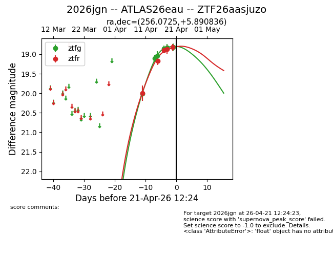
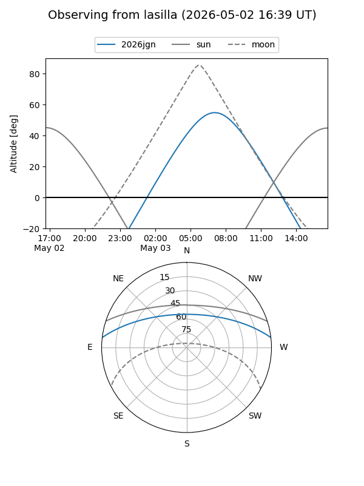
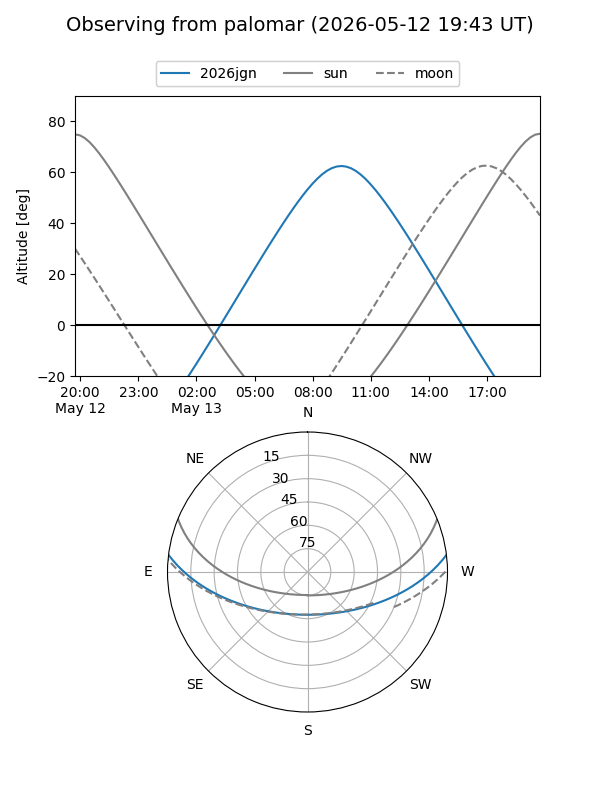
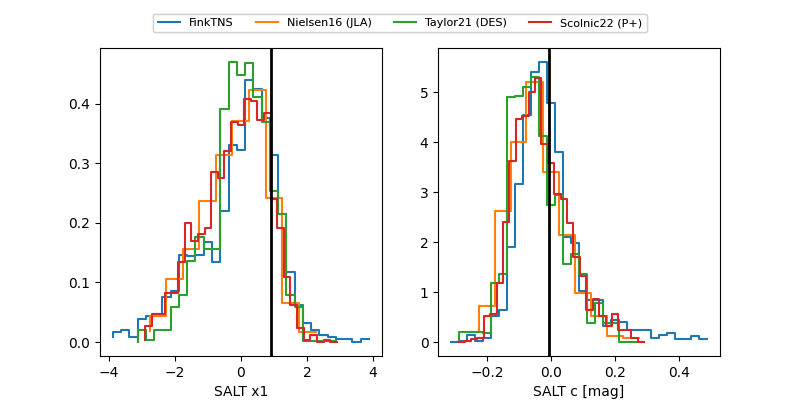

2026jgn
Target 2026jgn at 2026-04-21 12:28
Aliases and brokers:
FINK: link
Lasair: link
ALeRCE: link
TNS: link
YSE: link
alt names
ZTF26aasjuzo (ztf,fink_ztf)
2026jgn (tns,yse)
ATLAS26eau (atlas)
Coordinates:
equatorial (ra, dec) = 256.0725,+5.89084
equatorial (HMS+DMS) = 17:04:17.41,+05:53:27.01
galactic (l, b) = (25.6751,+26.47298)
Flags:
Photometry:
last ztfg=18.82, ztfr=18.82
6 ztfg, 5 ztfr detections
Lightcurve

Visibility


Additional plots
